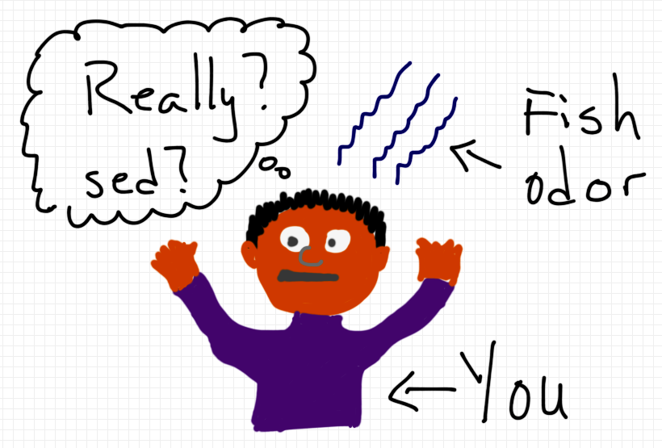

JavaScript Toolshttps://github.com/jamesarosen/presentations/javascript_equipment
James A. Rosen
Senior User Happiness Engineer, Zendesk
@jamearosen
https://github.com/jamesarosen
Chapter 1: Tools Philosophy
JSHint
Shell Scripting
CommonJS & Browserify
Make & Rake
File Watchers
Chapter 2: insistent_cat.js
Chapter 3: JSHintThe Sine Qua Non of JavaScript Development
/ˌsaɪnɨ kweɪ ˈnɒn/ or /ˈsine kwaː ˈnoːn/
If you don't use this, I will smack you with a fish.
Origin: L, without which not
jshint assets/insistent_cat.js
assets/insistent_cat.js: line 21, col 53,
Expected an assignment or function call and instead saw an expression.
cat.following ? cat.unfollow() : cat.follow();
if (cat.following) {
cat.unfollow();
} else {
cat.follow();
}
JSHint: Multiple Versions
You work on many projects; each prefers a specific version of JSHint
{
"devDependencies": {
"jshint": "~1.1.0"
}
}
npm install
Ignore warnings about -g
node_modules/jshint/bin/jshint myFile.js
Run from editor w/ keyboard shortcut
Run from editor on save
Add to git pre-commit hook
Run in CI
Chapter 4: Working with Multiple Files
node_modules/jshint/bin/jshint src
In script/hint:
#!/bin/sh
node_modules/jshint/bin/jshint src
cat src/cat_image.js \
src/cat_follower.js \
> assets/insistent_cat.js
(function(window, $, undefined) {
// contents go here
window.InsistentCat = InsistentCat;
}(this, this.jQuery));
In script/build:
#!/bin/sh
outfile="build/library.js"
echo "(function(window, $, undefined) {" > $outfile;
cat src/cat_image.js >> $outfile;
cat src/cat_follower.js >> $outfile;
echo "window.InsistentCat = InsistentCat;" >> $outfile;
echo "}(this, this.jQuery));" >> $outfile;
Chapter 5: Modularization
Dependencies are obvious
Test in isolation
Avoid global namespace pollution
AMD - still "globals"
ES6 Modules (es6-module-transpiler) - promising, but
in flux.
CommonJS - already using npm; large library set.
// in cat_image.js:
module.exports = function buildCatImage(src, options) {
// ...
};
// in cat_follower.js:
var buildImage = require('./cat_image') ;
// ...
var catImage = buildImage('path/to/cat.png', { width: '20px' });
CommonJS Compiler Concerns
Define require
Convert files to module definitions
Optional: convert (vendor) globals to modules
Optional: export a single global
Browserification: Framework
From Sprockets-CommonJS :
var require = function(name, root) {
...
};
require.define = function(bundle) {
...
};
Browserification: Compiler
In script/cjs2browser:
#!/bin/sh
filename="$1";
echo "require.define(\"${filename}\","
echo " function(exports, require, module) {";
cat $filename;
echo "});";
Browserification: Build Script
outfile="assets/insistent_cat.js"
node_modules/jshint/bin/jshint src || exit 1;
cat script/commonjs_shim.js > $outfile;
echo "$(script/cjs2browser src/cat_image.js)" >> $outfile;
echo "$(script/cjs2browser src/cat_follower.js)" >> $outfile;
var catImage = require('src/cat_image.js')
sed -E 's/^src\/(.+)\.js$/\1/p'

{
"devDependencies": {
"browserify": "~2.8.0"
}
} npm install
In src/main.js:
window.InsistentCat = require('./cat_follower');
./node_modules/browserify/bin/cmd.js \
src/main.js \
> assets/insistent_cat.js
Decomposition
Use `mtime` to avoid work
First-class shell
build:
node_modules/jshint/bin/jshint src
node_modules/browserify/bin/cmd.js \
src/main.js \
> assets/insistent_cat.js
build: assets/insistent_cat.js
assets/insistent_cat.js: jshint
node_modules/browserify/bin/cmd.js \
src/main.js \
> assets/insistent_cat.js
jshint:
node_modules/jshint/bin/jshint src
.PHONY: build jshint
assets/insistent_cat.js : jshint
node_modules/browserify/bin/cmd.js \
src/main.js \
> assets/insistent_cat.js assets/insistent_cat.js: jshint
node_modules/browserify/bin/cmd.js \
src/main.js \
> $@
build: assets/insistent_cat.js
assets/insistent_cat.js : jshint
DIST_JS = assets/insistent_cat.js
build: $(DIST_JS)
$(DIST_JS) : jshint
clean:
-rm $(DIST_JS)
.PHONY: build clean
-
SRC_DIR = src
LINT_FREE_DIR = tmp/lint_free
JS_FILES := $(wildcard $(SRC_DIR)/*.js)
LINTED_JS_FILES := $(JS_FILES:$(SRC_DIR)/%=$(LINT_FREE_DIR)/%)
$(LINTED_JS_FILES): $(LINT_FREE_DIR)/%.js : $(SRC_DIR)/%.js $(LINT_FREE_DIR)
node_modules/jshint/bin/jshint $<
touch $@
$(DIST_JS): $(LINTED_JS_FILES)
node_modules/browserify/bin/cmd.js \
src/main.js \
> $@
clean:
-rm $(DIST_JS)
-rm -rf $(LINT_FREE_DIR)
desc 'Build the InsistentCat Library'
task :build 'assets/insistent_cat.js'task :default => :build
file 'assets/insistent_cat.js' => LINT_FREE_FILES do |t|
browserify = 'node_modules/browserify/bin/cmd.js'
main = 'src/main.js'
sh "#{browserify} #{main} > #{t.name} "
end
def lint_free_file (source)
source.sub %r{^#{SRC_DIR}}, LINT_FREE_DIR
end
LINTED_JS_FILES = JS_FILES.
map { |f| lint_free_file(f) }
Rake: Lint-Free File Tasks
JS_FILES.each do |f|
file lint_free_file(f) => [ f, LINT_FREE_DIR ] do |task|
jshint = 'node_modules/jshint/bin/jshint'
sh "#{jshint} #{task.prerequisites.first }"
touch task.name
end
end
"Marker File" for unit tests
=> test_file
=> file_under_test
=> dependencies
20th Century Fox Television
nodemon --exec passes changed file
rake dist src/foo.js
Need extra command to drop args
guard :shell do
watch(%r{^src/.*\.js}) { system 'rake', 'dist' }
end